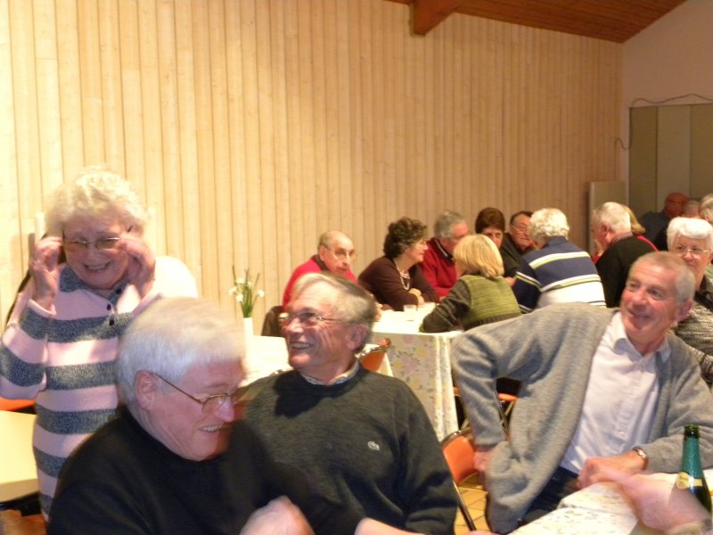
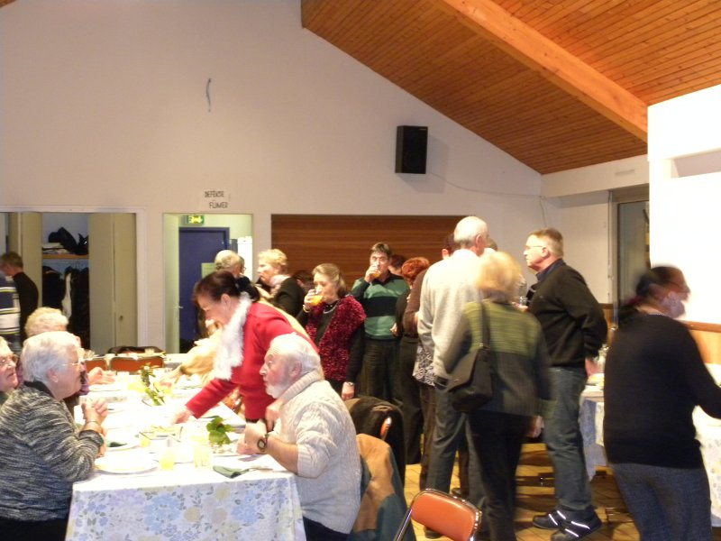
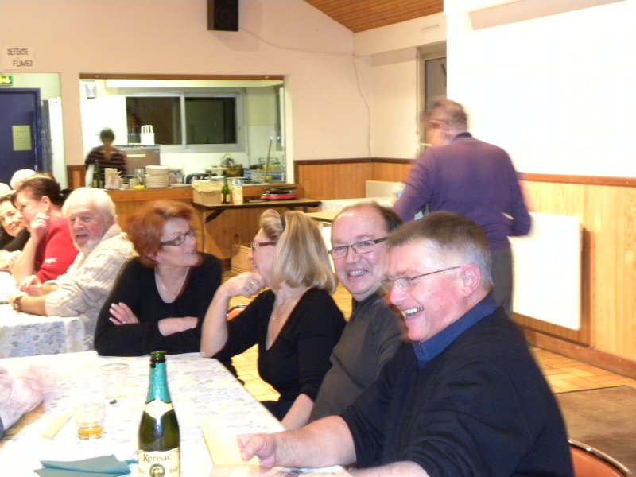
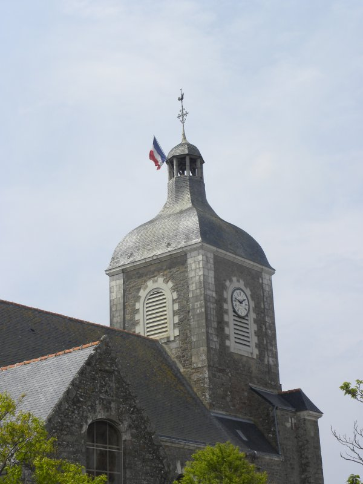
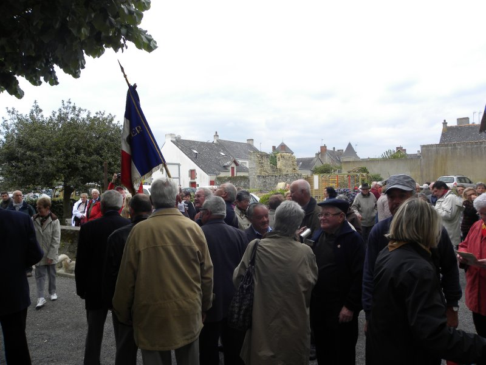
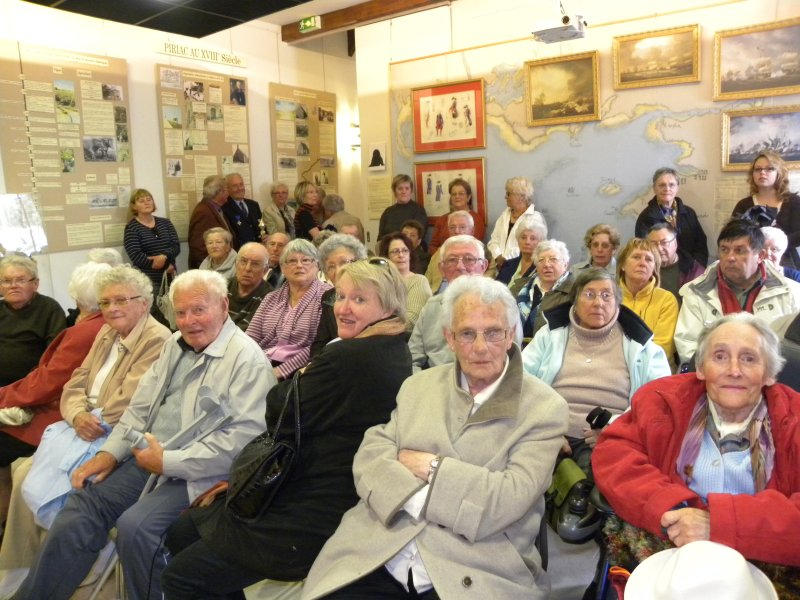
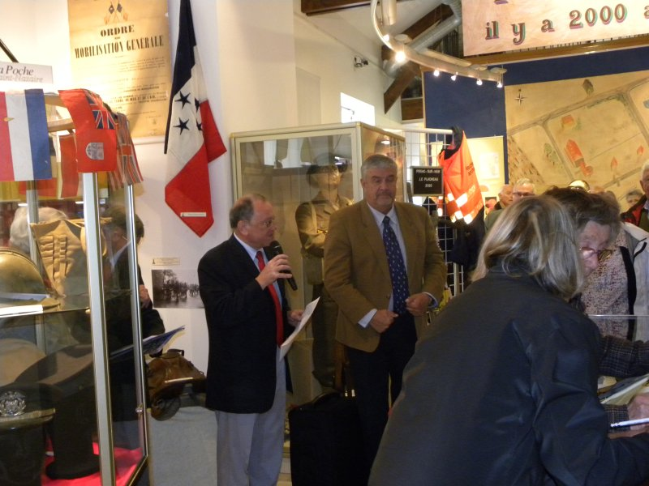
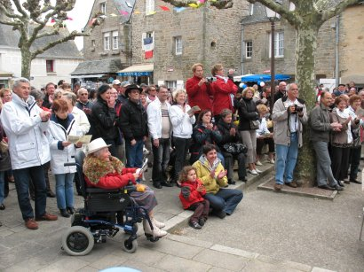
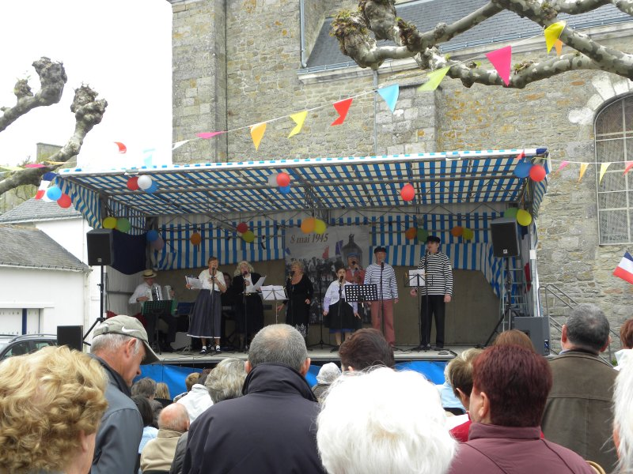
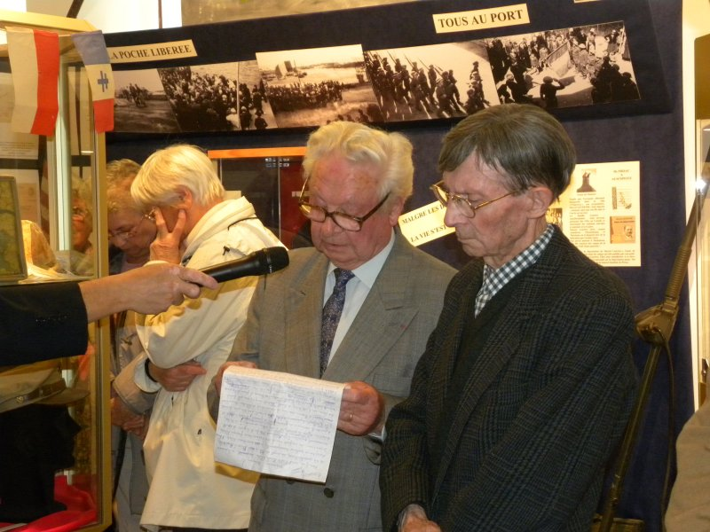

Temps forts 2010
-
L'assemblée générale: Soirée Crêpes
  
-
9 mai 2010: 65 ans après, jour de fête à Piriac!
Le drapeau flotte à nouveau, pour la première fois depuis le 8 mai 1945
 
Les visiteur étaient nombreux
 
Un public enthousiaste
 
Emile Letertre et son frère Marcel
